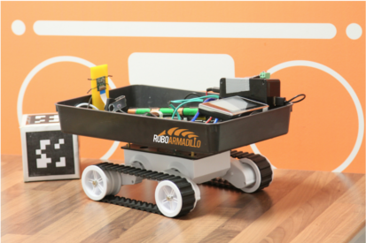

RoPiPyKokiDuino
This is the page for the RoPiPyKokiDuino. This kit is what drew the founders of RoboArmadillo together and it is currently our most developed product. It is in beta stage testing and available to download and install (simply follow the instructions in the "Download and Setup" tab below). If you have already built you're kit (or you're using the simulator) then the documentation for using the kit can also be found below.